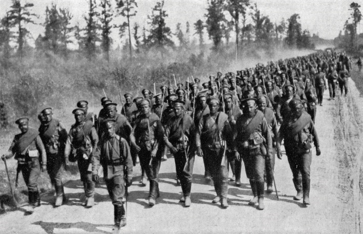
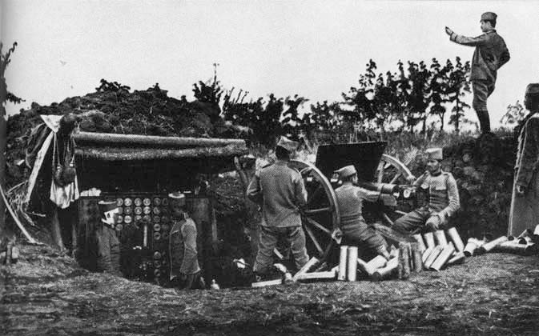
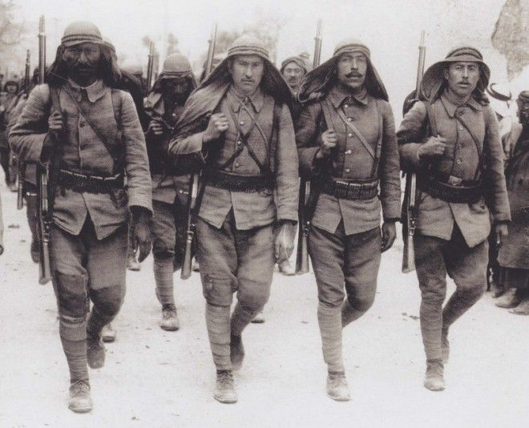

IF YOU CAN SEE THIS TEXT, YOU NEED TO ENABLE JAVASCRIPT FOR MANY FUNCTIONS OF THIS SITE
While Germany pushed in the west, it also had to defend itself from the Russian assault. Russia invaded East Prussia in mid-August with a strength of over 800,000 men, compared to the defenders the Germans only had 250,00 in strength. The German army was able to win at Tannenberg and Masurian Lakes. The Russian soldiers were not trained as well compared to a German soldier which is one reason their invasion failed, alongside a rushed plan to aide their French allies, the Russians did not have great success.
 Austria Hungary and Russia would also battle in 1914, where Russia was victorious and able to take over Galicia, which is a part of present day Poland. The Austro-Hungarian losses forced Germany to send more soldiers to the Eastern Front to aide their ally. Though by the end of 1914, the war on the east would slow down after an Austro-Hungarian defeat at their Przemysl Fortress. The Austro-Hungarians also lost on the Serbian Front. After three offensive pushes, and even taking important locations, the Serbians were able to counter attack and force the Austrians out until 1915, where Germany would aid their ally. The Ottoman Empire remained neutral during the initial part of the war, but by the end of the year The Ottomans would agree to join the central powers.